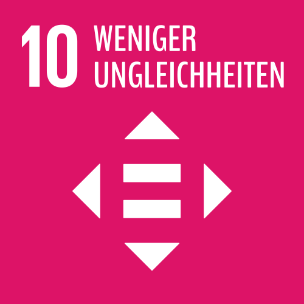

In vielen Ländern Asiens und Lateinamerikas haben zwischen 2007 und 2012 die Einkommen der unteren Einkommensgruppen stärker zugenommen als die der oberen. Ein gutes Zeichen, um die Ungleichheit auf der Welt zu verringern. Denn geringere Ungleichheit bedeutet immer auch eine bessere Möglichkeit der Teilhabe. Sie ist wichtige Voraussetzung, die wirtschaftlichen, wissenschaftlichen und sozialen Potenziale der Menschen zu nutzen.
Dennoch gilt es bis 2030 viele Dinge zu ändern. Dort, wo die Einkommensschere weiterhin auseinander geht, bedingt die ungleiche Verteilung von Reichtum gesellschaftliche Probleme. In armen Ländern verhindert sie Wachstum und somit die Überwindung der Armut. In Industrieländern bedroht zunehmende Ungleichheit den gesellschaftlichen Zusammenhalt und wirkt sich negativ auf die wirtschaftliche Entwicklung aus.
„Würde man das Vermögen der unteren Hälfte auf 1,5 oder zwei Prozent aufstocken, hätte man für die Armen so viel erreicht wie mit 30 Jahren Wachstum, und das, ohne die planetarischen Grenzen weiter zu überschreiten.“
(Thomas Pogge, Professor für Philosophie)
